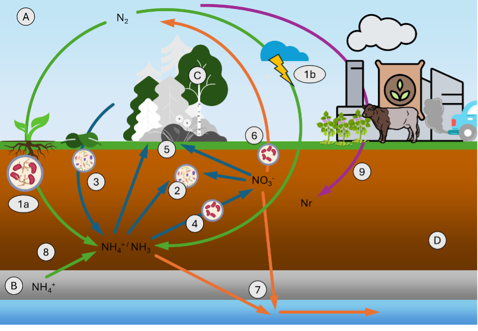
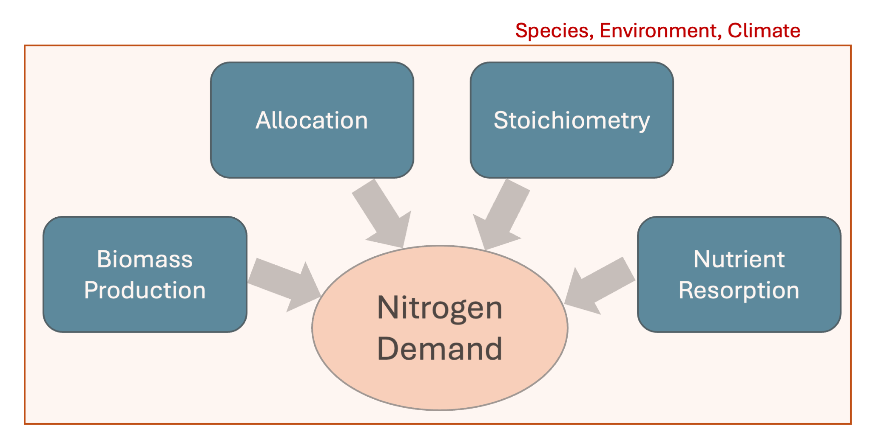
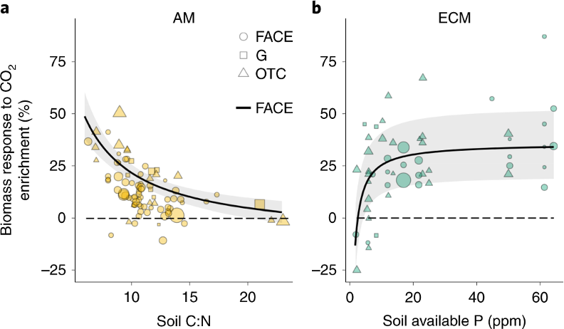
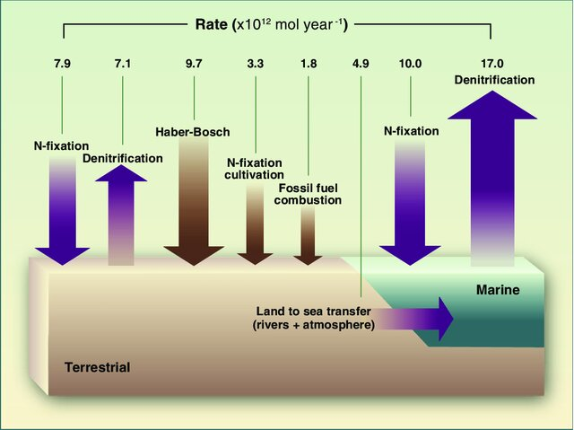

11 Nitrogen Cycle and Interactions with the Carbon Cycle
Authored by Julian Richter, Livio Conzett and Martin Sigrist. Edited by Fabrice Lacroix.
Nitrogen (N) is a primary nutrient that is essential for life on earth. While it is present in large abundance as N2 in the atmosphere, it is unavailable in this form for most organisms on Earth. In the terrestrial ecosystem, the availability of nitrogen is critical for fueling of photosynthesis and production of plant tissue, it also serves as a substrate for a vast number of microbial processes in the soil, under which the N2O gas is, for instance, produced (Nevins, Strauss, and Inglett 2020). The cycling and availability of nitrogen in soils and vegetation thus both play an important role for the vegetative uptake of carbon from the atmosphere, as well as emissions of carbon and nitrogen greenhouse gases from soils.
11.1 Nitrogen Pools in the Earth System
Nitrogen relevant to the terrestrial ecosystem is found in atmosphere (A), lithosphere (B), biosphere (C) and pedosphere (D) pools (Figure 11.1):
(A) Atmosphere: Nitrogen gas (N2) makes up 78% of the atmosphere composition. Despite constituting an enormous pool, N2 is not accessible to most of terrestrial organisms (Myrold 1999).
(B) Lithosphere: In the upper lithosphere, nitrogen is found in silicate minerals in the form of ammonium (NH4+, (Mysen 2019)). This pool is generally not directly accessible to organisms due to strong bonds, but nitrogen stored in minerals can be released as ammonium to the soil as part of the weathering process.
(C) Biosphere: Nitrogen is present in tissues, amino acids, and nucleic acids of organisms.
(D) Pedosphere: Soils constitute a large pool of nitrogen (Myrold 1999), which is present in the forms of both inorganic (e.g., NO3-) and organic (e.g., nitrogen found in soil organic matter) nitrogen. Of the different nitrogen components found in soils, ammonia (NH4) ammonium (NH4+) and nitrate (NO3-) are available forms for uptake by plants.
11.2 Nitrogen sources, transformation and loss pathways
Here, we underline seven processes in the nitrogen cycle of terrestrial ecosystems that determine its availability and influence on vegetation and microbe dynamics, as well as the terrestrial greenhouse gas exchange. In Figure 11.1, inputs to the terrestrial ecosystem are represented in green, soil processing and vegetation dynamics are represented in blue, losses from the terrestrial ecosystem are shown in orange and anthropogenic perturbations are illustrated in purple.
In terms of inputs to the terrestrial ecosystem, nitrogen fixation and deposition from the atmosphere serve as natural sources of nitrogen to the terrestrial ecosystem (1). Immobilization (2), mineralization of organic nitrogen from plant litter (3) and nitrification (4) transform nitrogen and can increase or reduce the availability of nitrogen forms available to plants or microbes (5). Nitrogen is finally lost from the terrestrial ecosystem via denitrification (6) and the leaching (7). Additionally, weathering has recently been found to be a significant additional source of nitrogen to soils (8) (Houlton, Morford, and Dahlgren 2018). Anthropogenic activities (9) have greatly perturbed sources of nitrogen to the terrestrial ecosystem (Galloway et al. 2004).
11.2.1 Sources of nitrogen
- Nitrogen fixation and deposition: As mentioned above, N2 is naturally unavailable to most organisms in terrestrial ecosystems. However, two biological N fixation mechanisms have evolved to enable the fixation of N2 from the atmosphere and its transformation into a compound available to microbes and plants (usually NH3). The biotic fixation of nitrogen occurs primarily through symbiotic interactions of plant roots and bacteria (rhizobia). Here, bacteria enter plant roots (leading to the formation of root nodules) to fix N2. The relatively large energetic costs expended during this process is covered using organic carbon supplied by the roots as a vital energy source. This process occurs especially in certain plant species such as legumes (e.g., peanuts or clovers). Soil microbes, such as Chlorobium, can however also fix nitrogen non-symbiotically as free-living species.
A further form of nitrogen fixation occurs through a non-biological abiotic process that is largely controlled by lightning sparks (1b). Nitric oxides are produced in the high-energy spark process of lightning, which can be dissolved into raindrops, which deposits the nitrogen onto land through rainfall.
11.2.2 Microbial processing and plant uptake
- Immobilization: Immobilization in the soil occurs when soil bacteria take up nitrogen to cover their own nitrogen needs. Usually, microbes take up nitrogen during the decomposition process of organic matter. In cases of a low nitrogen content in the organic matter, the bacteria use nitrogen available in the soil in the forms of NO3- or NH4+.
- Litter inputs and N mineralization: Plants produce litter which contains organic nitrogen. Under litterfall, this nitrogen is thus added to the soil (Myrold, 1999). The degradation process that converts organic N from litter to inorganic NH4+ is called mineralization. Organic carbon is used by microbes as an energy source, but the nitrogen found in the litter and organic material can also be used by microbes to cover their own nitrogen requirements during the decomposition process. Excess nitrogen is then released to the soil as NH4+, which is a form of nitrogen available to plants.
- Nitrification: Nitrification is a process that makes up of a weak source of energy for bacteria. It takes place in two steps. In a first step, ammonia oxidizing microbes use NH4+ under aerobic conditions as energy source, which produces NO2-. Other types of microbes, such as Nitrobacter, can then metabolize the NO2- to NO3- in a subsequent step. We note that both NH4+ and NO3- are thereby forms of nitrogen available for plant uptake.
\[ \begin{align} NH_{4} \rightarrow NO_{2} \rightarrow NO_{3}^{-} \end{align} \tag{11.1}\]
- Plant nitrogen uptake and cycling: Plants can take up nitrogen in the forms of nitrate (NO3-), ammonia (NH3) and ammonium (NH4+). Nitrogen is needed by plants to build their organic tissue, as well as the production of proteins and nucleic acids. Under low nitrogen availability, plants can thereby regulate their allocation nitrogen into different tissues (e.g., leaves), as well as limit their nitrogen loss, for instance via foliar resorption (see sections below).
11.2.3 Nitrogen loss pathways
Denitrification: In the absence of oxygen (anaerobic conditions), certain microorganisms can use nitrate (NO3-) as an oxidate for the degradation of organic matter, thereby by converting NO3- to N2. This process is called denitrification. For this process to happen, soils need to be saturated with water, where oxygen is thus not available in high enough concentrations to be used as an oxidant. The process undergoes multiple steps of nitrogen reduction (Equation 11.2). A disruption to the process chain can produce and release nitrous oxide (N2O), also known as laughing gas, to the atmosphere. From a climate perspective, this is a process of significant importance because N2O is a strong greenhouse gas (Tian et al. 2024). \[ \begin{align} NO_{3}^{-} \rightarrow NO_{2}^{-} \rightarrow NO \rightarrow N_{2}O \rightarrow N{_{2}} \end{align} \tag{11.2}\]
Leaching: Nitrogen can be lost from the terrestrial ecosystem through transport with water through the soil and into groundwater or freshwaters. Nitrogen dissolved in pore water, such as NO3-, is highly mobile and therefore the most susceptible to this loss pathway. Additionally, surface transports of organic material under heavy rainfall, also removes organic nitrogen from the terrestrial ecosystem via erosion. The nitrogen transported to freshwaters, lakes, and even to the ocean, fuels the nitrogen source in these downstream ecosystems. The same linkage however also brings with it substantial environmental risks with increasing nitrogen availability and eutrophication due to human activities (Gruber and Galloway 2008).
11.3 Plant N Dynamics
11.3.1 Plant N Demand
Nitrogen is a critical element for plant dynamics, influencing the relationship between photosynthesis and growth, and is an essential for building of tissue, amino acids and nucleic acids, and thus playing a critical role in biomass production (Peng et al. 2023). Several factors thereby influence the demand for nitrogen in plants in an interplay between biomass production and maintenance, climate factors, plant tissue stoichiometric constraints, and altered plant dynamics facing low nutrient conditions (Figure 11.2).
Biomass Production
Plants build biomass from the difference between gross primary productivity and autotrophic respiration (See Chapter 4). The biomass production can thereby be assumed to approximately linearly depend on gross primary productivity (GPP).
Tissue Stoichiometry
Tissue stoichiometry and its variations among species and along climatic gradients is significant (Peng et al. 2023). Plants that allocate a higher proportion of leaf biomass relative to total biomass thereby generally require more nitrogen (see Chapter 4). This is due to higher N stoichiometry of the leaf tissue with comparison to that of e.g. coarse roots. Nitrogen available in the soil, may not always support the demand of the plants. Lower C:N ratio (e.g., 10:1) than plant stochiometric needs indicates relatively higher nitrogen availability, which would fully support plant growth.
Allocation
The allocation of biomass growth also impacts the demand of nitrogen, due to the differing stoichiometries of different plant compartments. Under low nitrogen conditions, plants can adapt their allocation of biomass, thereby focusing on increasing below-ground growth, which firstly requires less nitrogen, and secondly enables more efficient uptake from the soil through higher root density.
N Resorption Plants can reuse nitrogen by resorbing them from their different compartments (roots and leaves). This thus decreases the demand for N.
Climate and Environmental Factors
Firstly, climate and other environmental factors, such as atmospheric temperatures and increased light availability impact the photosynthesis and the biomass production of plant species. In Chapter 4, it is shown that photosynthesis and growth are constrained by radiation, as well as temperature. Other potentially-relevant climate factors are precipitation, winds and elevation. Higher primary productivity and biomass production also mean a greater nitrogen demand for the production and maintaining of plant tissue. Climate factors can also impact plant tissue stoichiometry, allocation, as well as foliar resorption (Peng et al. 2023).
11.3.2 Nitrogen Limitation and Plant Response to Low Nitrogen Conditions
Nitrogen limitation arises when plant N demand be sustained by available soil N and through other sources of N. We note that plant growth can also be co-limited by other nutrients such as P and K.
In such conditions, plants increasingly invest resources into acquiring more nitrogen (e.g. through increased root biomass). In such conditions, plants increasingly invest resources into acquiring more nitrogen (e.g. through increased root biomass). Plants can also increase the efficiency of their use of nitrogen by resorbing nitrogen from senescing leaves, thus recycling the nitrogen within the plant. Nitrogen resorption is a process that is especially mainly found in colder, drier climates, particularly at higher latitudes with low nitrogen fixation and slow nitrogen cycling (Peng et al. 2023). This increased efficiency of nutrient use is referred to as Nitrogen Resorption Efficiency (NRE).

11.3.3 Global Nitrogen Uptake in Terrestrial Ecosystems
Peng et al. (2023) estimated global nitrogen uptake applying knowledge mentioned in the points above. First, they compiled data from 804 forest and grassland sites to estimate biomass production. Nitrogen content in leaves (\(N_{leaf}\)), wood, and roots was then calculated using biomass (\(BP\)) and specific carbon-to-nitrogen ratios (\(CNratio_{leaf}\)):
\[ \begin{align} N_{leaf} = \dfrac{BP_{leaf}}{CNratio_{leaf}} \end{align} \tag{11.3}\]
The uptake of the individual plant components was then summed globally for all plant components (Equation 11.4): \[ \begin{align} N_{up} = N_{leaf} (1 - NRE) + N_{wood} + N_{root} \end{align} \tag{11.4}\]
Additionally here, NRE was included to account for nitrogen recycling in leaves, adjusting nitrogen uptake by subtracting estimated resorbed nitrogen. Finally, these models were applied globally using spatially-explicit climate and vegetation data, leading to a global estimate of 950±250 Tg of nitrogen per year (Peng et al. 2023).
11.4 Interactions with the Carbon Cycle and Impacts of N Limitation
By impacting photosynthesis and plant growth, nitrogen availability is also a critical factor in determining how effectively terrestrial ecosystems can sequester carbon dioxide (CO2) from the atmosphere.
11.4.1 Impact of Nitrogen Availability on vegetation CO2 Uptake
Nitrogen availability significantly influences the effect of CO2 fertilization, in which elevated atmospheric CO2 stimulates plant growth and photosynthesis (see Chapter 4, Terrer et al. (2019)). In nitrogen-rich ecosystems, plants can fully exploit elevated CO2 levels, leading to greater photosynthesis, biomass accumulation, and long-term carbon storage (Reich, Hungate, and Luo 2006). Studies, such as those using free-air CO2 enrichment (FACE) experiments, have also shown show stronger CO2 responses in ecosystems with higher nitrogen availability, resulting in enhanced plant growth and carbon sequestration (Figure 11.3).
Conversely, nitrogen-limited ecosystems experience constrained CO2 fertilization effects. In such environments, plants deplete soil nitrogen with increased growth and biomass production, leading to “progressive nitrogen limitation” (PNL), where nitrogen availability decreases over time, restricting further growth and CO2 uptake (Reich, Hungate, and Luo 2006). Without sufficient nitrogen, ecosystems will not maximize carbon sequestration, despite elevated CO2 levels (Hungate et al. 2003). In their study, Terrer et al. (2019) estimate that about 65% of global vegetation is nitrogen-limited. Low soil carbon-to-nitrogen ratios (C:N) is an indicator of greater nitrogen availability and greater biomass production under elevated CO2. Higher C:N ratios indicate nitrogen scarcity, limiting CO2 uptake and plant growth.

11.4.2 Terrestrial Ecosystem Responses to Elevating CO2
Nitrogen limitation can be observed through several indicators, including changes in the soil C:N ratio, reduced leaf nitrogen content, stunted biomass growth, and shifts in plant community composition. Understanding and managing nitrogen availability is crucial for maximizing the potential of ecosystems to sequester carbon and mitigate climate change. Increasing nitrogen limitation due to atmospheric CO2 in terrestrial ecosystems can lead to the following terrestrial ecosystem responses:
1. Progressive Nitrogen Limitation (PNL) PNL occurs when soil nitrogen is gradually depleted as plants grow in response to elevated CO2, leading to reduced plant growth and CO2 uptake over time (Reich, Hungate, and Luo 2006). This is a key indicator of nitrogen limitation, especially in long-term studies.
2. Soil Carbon-to-Nitrogen (C:N) Ratio A high C:N ratio suggests nitrogen scarcity, as more nitrogen is tied up in organic matter, limiting its availability to plants. In nitrogen-limited ecosystems, higher C:N ratios correlate with reduced plant growth and carbon sequestration (Terrer et al. 2019).
3. Reduced Leaf Nitrogen Content In nitrogen-limited ecosystems, plants can allocate less nitrogen to leaves. Reduced leaf nitrogen content in turn can lead to lower photosynthetic capacity and diminished plant productivity, due to the importance of nitrogen for the Rubisco enzyme (Reich, Hungate, and Luo 2006). This is a direct physiological sign of nitrogen limitation reflected in the plant leaf C:N ratio.
4. Stunted Biomass Growth Nitrogen limitation often results in smaller increases in biomass under elevated CO₂, as plants cannot sustain the higher rates of photosynthesis necessary for continued growth (Hungate et al. 2003). Stunted biomass growth is a clear indicator of nitrogen limitation in long-term studies.
5. Altered Plant Community Composition In nitrogen-limited ecosystems, nitrogen-fixing plants, such as legumes, may become more dominant, as they are less reliant on soil nitrogen. This shift in species composition is an indicator of nitrogen limitation affecting ecosystem dynamics (Reich, Hungate, and Luo 2006).
6. Reduced Leaf Area Index (LAI) The Leaf Area Index (LAI) represents the total leaf area available for photosynthesis. In nitrogen-limited ecosystems, the initial increase in LAI under elevated CO2 is often temporary, and LAI may decline as nitrogen becomes scarcer, limiting further plant growth (Reich, Hungate, and Luo 2006).
11.5 Anthropogenic Influence on Terrestrial Nitrogen Cycle
11.5.1 Globally Increased Sources of Nitrogen to Terrestrial Ecosystems
Since the start of the fossil fuel aera, anthropogenic activities have severely increased nitrogen inputs to the terrestrial ecosystem, globally (Gruber and Galloway 2008). The global nitrogen cycle has thereby been perturbed through two major human activities, where inputs of nitrogen to the terrestrial ecosystem have been augmented by human activities:
Fossil fuel emissions through energy production
Nitrogen is emitted to the atmosphere as a waste product (NOx) during the combustion of fossil fuels. This happens either through the oxidation of atmospheric N2 or organic N in the fuel. These NOx gases can dissolve in raindrops and act towards increasing N deposition to terrestrial ecosystems Figure 11.4.
Food production
The industrial Haber-Bosch process to convert gaseous N2 to NH3 was a key advance for global agriculture to keep up with a growing population at beginning of the 20th century. It enabled large-scale N fertilization of agricultural crops by applying ammonium nitrate (NH4NO3), thereby increasing crop yield at relatively low economic costs. In terms of the global nitrogen cycle, the Haber-Bosch process means a strong additional fixation from the atmosphere that is then added to the terrestrial ecosystem as fertilizers Figure 11.4.
Livestock breeding on an industrial scale also has an impact on the terrestrial ecosystem nitrogen cycle, especially in land areas in proximity to livestock pastures. Zhang et al. (2017) estimate an increase in the total manure nitrogen production of over 600 % since preindustrial times. The demand for animal feed results not only in an increased nitrogen input into the ecosystem, but also a spatial redistribution, for instance from the transport of soy.
Additionally crops typically used in agriculture, such as legumes, often enhance nitrogen fixation in symbiosis with N2-fixing bacteria, such as Rhizobia. Practices in rice cultivation also lead to anaerobic environments that encourage high rates of biological nitrogen fixation by freeliving cyanobacteria.

11.5.2 Consequences for terrestrial ecosystems and feedback on climate
The increased availability of reactive nitrogen in the terrestrial ecosystem has, in turn, important environmental consequences, as well as potential feedbacks on the climate Erisman et al. (2013):
Due to increasing sources of nitrogen to terrestrial ecosystems and especially over-fertilization in agriculture, the leaching (Figure 11.1 (8)) of large amounts of nitrogen is transferred to rivers, lakes, coastal systems, potentially causing eutrophication downstream. This is known to affect biological source of N in these downstream systems, with potentially important consequences for ecosystems, greenhouse gas exchange, as well as regional economies.
Increasing nitrogen sources to terrestrial ecosystems could limit reduced CO2 uptake in the case of nitrogen limitation. Thus, the nitrogen limitation effect under CO2 fertilization described above could be reduced, allowing for more CO2 as a consequence of CO2 fertilization.
Increasing N availability in soils due to enhanced inputs to the system, in combination with higher temperatures, has been shown to increase emissions of the strong greenhouse gas N2O from terrestrial systems (Tian et al. 2024). See Chapter 12 for more information on terrestrial N2O emissions.